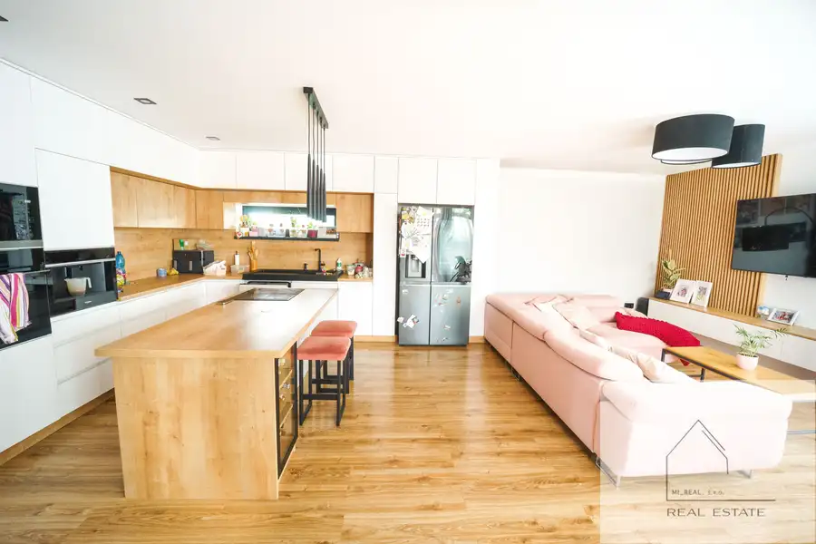
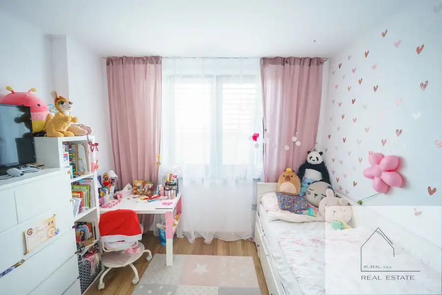
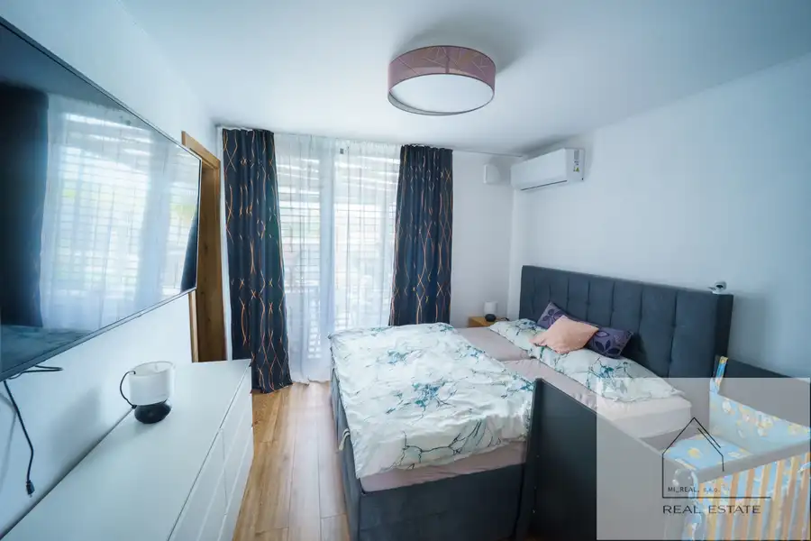
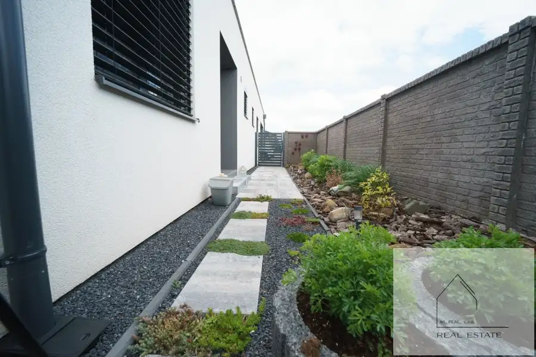

Krásna novostavba pri Nitre (obec Pohranice) na predaj
Nitra




- Plocha126.65 m²
- StavNovostavba
- Energetická triedaA
O nehnuteľnosti
V exkluzívnom zastúpení realitného centra MI_REAL, s.r.o Vám ponúkame na predaj krásnej novostavby 4- izbového rodinného domu pri Nitre -v obci Pohranice ( cca 10 km od Nitry) ID: 20262804VÝMERA:- výmera pozemku: 495 m2 - úžitková plocha : 126, 65 m2 - obytná plocha: 117 m2- zastavaná plocha a nádvorie: 201,5 m2DOM:- novostavba - podlaha- plávajúca, dlažba, - okná: plastové, 2x hliníkový HS portál ( z obývačky a spáľne)- strecha- plochá, betónová , zvrchu fatrafol- stavebný materiál: tehla- v dome je nainštalovaná rekuperácia, 2x klimatizácia,- ohrev vody- bojler- kúrenie- podlahové, teplovodné napojené na elektrokotol- dom je napojený na siete: voda, elektrika 230/400 V, kanalizácia- automatická závlaha trávnikaDISPOZIČNÉ RIEŠENIE:Dom pozostáva zo vstupnej chodby, obývačky spojenej s kuchyňou, špajze, troch izieb ( z toho v jednej z nich je vlastná kúpeľna so sprchovacím kútom, WC a šatníka), 2 x kúpeľne s WC, technickej miestnosti, dieľne, prekrytej terasy, garáže. Na pozemku sa nachádza záhradný domček. LOKALITA:Rodinný dom sa nachádza v obci Pohranice, neďaleko centra mesta Nitra s kompletnou občianskou vybavenosťou. Obec má základnú občiansku vybavenosť- pošta, potraviny, reštauračné a pohostinské služby, zdravotnícke zariadenie, lekáreň, ihriskoVÝHODY:- novostavba, dom je pripravený na nasťahovanie- dobrá lokalita, tichá súkromná ulica,- priestraný dom s dobrou dispozíciou- 2x klimatizácia- zimná záhrada- dom je vhodný na bývanie pre rodiny, jednotlivcov, ktorí najú radi poojné bývanie, avšak s rýchlou dostupnosťou do mesta NitraCENA: 349.000,-EUR ( v prípade vážneho záujmu je dohoda možná)Zaujala Vás naša ponuka? Neváhajte nás kontaktovať, radi Vás prevedieme danou nehnuteľnosťou. Všetci ste srdečne vítaní.Uvedená cena je konečná, schválená majiteľom, zahŕňa províziu realitnej kancelárie a kompletný servis.KONTAKT:Meno a priezvisko:Mgr. Miroslava Uhrinová.Telefónne číslo +421 949 729 188e-mail: miroslava.uhrinova@mirealreality.sk
Parametre
- Druh
- Rodinný dom
- Dátum zverejnenia
- 08. 06. 2026
- Energetický certifikát budovy
- A
- Plocha pozemku
- 495 m²
- Počet nadzemných podlaží
- 1
- Rok výstavby
- 2022
- Stav nehnuteľnosti
- Novostavba
- Terén pozemku
- Rovinatý
- Typ
- Predaj
- Typ konštrukcie
- Tehlová
- Vykurovanie
- Podlahové
- Zastavaná plocha
- 201.5 m²
- Úžitková plocha
- 126.65 m²